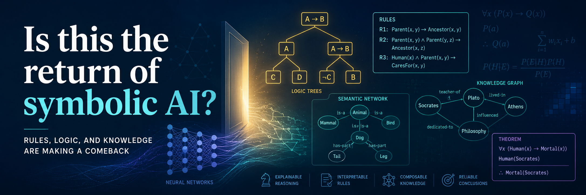

research |
teach |
blog |
news
papers: arxiv |
Scholar |
by topic
Is This the Return
of Symbolic AI?
timm@ieee.org
+1-304-376-2859
make appointment
join reading group
research |
teach |
blog |
news
papers: arxiv |
Scholar |
by topic
timm@ieee.org
+1-304-376-2859
make appointment
join reading group
Summary
Is This the Return of Symbolic AI? — Tim Menzies on AGENTS.md, Karpathy's LLM wiki, and where human skill still lives.

Tim Menzies · May 2026
“ Human-readable knowledge just went viral. Phase change? Or hype? ”
Have things just changed?
A lot?
For a decade Sutton's bitter lesson[1] was gospel: stop curating, scale compute, let the model figure it out. Symbolic AI was the cautionary tale. The LLM era doubled down — embed everything, retrieve chunks, generate, repeat.
Then quietly, the entire coding agent stack converged on the same artifact.
Hints on "how to do it", written in plain markdown at the repo root. Anthropic ships CLAUDE.md. OpenAI Codex ships AGENTS.md. Google ships GEMINI.md. Cursor, Copilot, Windsurf, Cline, Roo — same idea, different filenames. AGENTS.md emerged from collaborative work across OpenAI Codex, Amp, Google Jules, Cursor, and Factory, now stewarded by the Agentic AI Foundation under the Linux Foundation[2]. No schema. No parser. Just markdown the agent reads each session.
Then April 2026 Karpathy — yeah, the guy who coined "vibe coding" — drops a GitHub gist[3]. Not code. An "idea file." Pitch: stop re-deriving knowledge on every query. Let the LLM compile sources into a structured, cross-referenced markdown wiki. Knowledge compounds instead of evaporating. His line: "Obsidian is the IDE; the LLM is the programmer; the wiki is the codebase"[4].
The receipts are wild. 16 million views and 5,000 stars within days[5]. 5,000+ stars and 1,294 forks in 48 hours for a document that contains zero code[6]. Dozens of GitHub reimplementations inside two weeks. "LLM Wiki v2" extension gist drops April 26, hits 985 stars and 143 forks in 24 hours[7]. Shopify CEO Tobi Lütke ships QMD (a markdown search engine), Karpathy recommends it as the search layer[8]. Karpathy's gist explicitly references Vannevar Bush's 1945 memex — the maintenance problem Bush couldn't solve, the LLM apparently can[8].
Is it a phase change? Six weeks of GitHub enthusiasm isn't a paradigm shift. Same crowd was certain about knowledge graphs in 2023 and agents-as-a-service in 2024. But the AGENTS.md convergence is infrastructure-level, not meme-level. That bit doesn't unwind.
They differ in where the human skill lives.
Path one — Karpathy's version. The wiki is "AI territory." Karpathy himself: "the LLM writes and maintains all of the data of the wiki. I rarely touch it directly"[8]. His wiki is 100 articles and 400,000 words and he wrote none of it. The human role: curate sources, ask good questions, consume answers. The trajectory is named on the box: vibe coding (Feb 2025) → agentic engineering (Jan 2026) → LLM knowledge bases (Apr 2026). Each phase shifts more cognitive labor to the LLM. On this path, "human skill" reduces to taste-in-sources and quality-of-prompts. Not much else.
Path two — the production-extended version. The gist comments and the v2 follow-ups push back hard. The critique: "because the LLM summarizes and compresses sources into wiki pages, there's a risk of hallucinations getting baked in as facts. With pure RAG, a wrong answer is just one wrong answer. With an LLM wiki, a small misunderstanding can quietly propagate across linked pages"[4]. LLM Wiki v2[7] and AKBP add review-gated writes, confidence thresholds, typed relationships, human-in-the-loop checkpoints. On this path, "human skill" lives in three real places:
CLAUDE.md / SKILL.md / AGENTS.md) that governs everything.The teaching implication is sharp. Path one is uncurriculum-able — "ask better questions" isn't a course. Path two is curriculum-shaped: schema design, skill-selection, audit-discipline, knowing when to override the auto-output. That upstream layer is where human expertise still lives, and it's where the SE course of the next five years probably belongs.